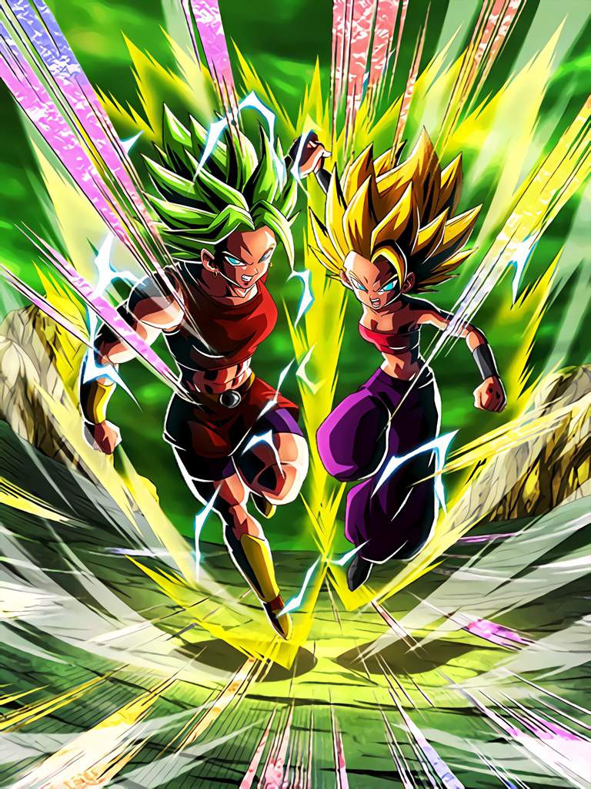

| HOME |
The Strongest Pair in the Universe Super Saiyan 2
Caulifla & Super Saiyan 2 Kale
Rarity:
Super AGL
leader skil:
"Joined Forces" Category Ki +4 and HP, ATK & DEF +130%;
or Super AGL Type Ki +4 and HP, ATK & DEF +100% Super Attack: (12-17 Ki) Shake Combat (18-24 Ki) Limit Break Blaster Raise DEF and Causes Colossal Damage to Enemy
Raise DEF and Causes Mega Colossal Damage to Enemy Passive Skill: Let's Go Ahead Together! ATK & DEF +66% and launch an additional attack; Ki +1 (up to 6) and chance to evade enemy's attack (including Super Attack) +6% (up to 66%) with each attack performed; ATK +10% per "Universe 6", "Joined Forces" and "Pure Saiyans" Category ally on the team; launch an additional Super Attack when there is a "Universe Survival Saga" or "Pure Saiyans" Category enemyLink Skill: Super Saiyan - Battlefield Diva - Warriors of Universe 6 - Tournament of Power - Prepared for Battle - Fierce Battle - Legendary Power Category:Peppy Gals - Universe Survival Saga - Pure Saiyans - Full Power - Joined Forces - Universe 6